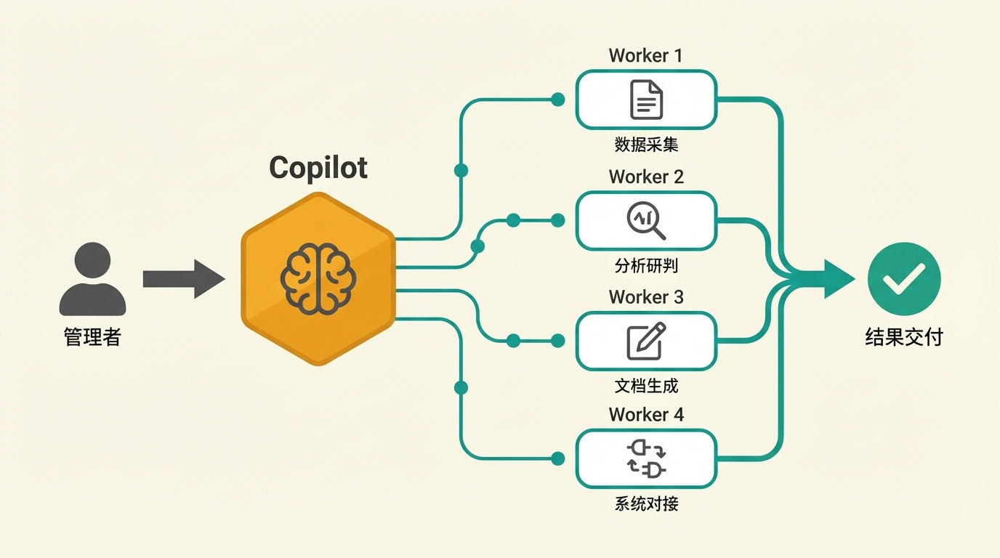
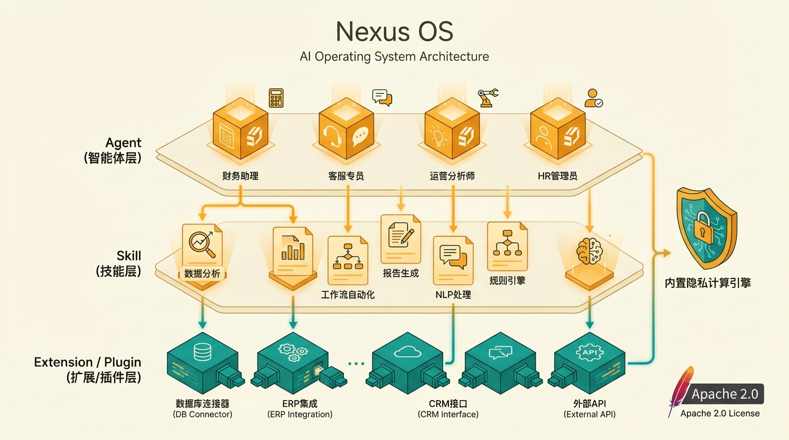
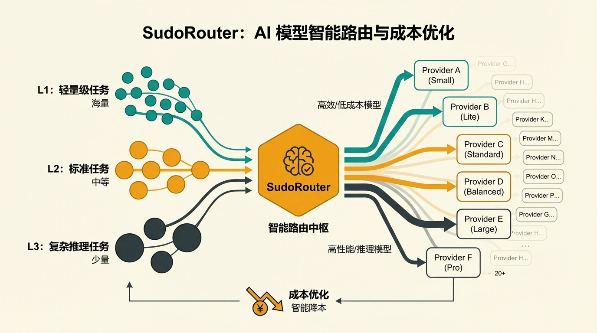
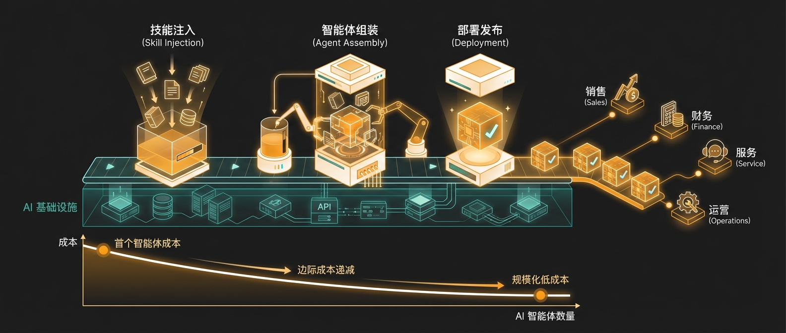
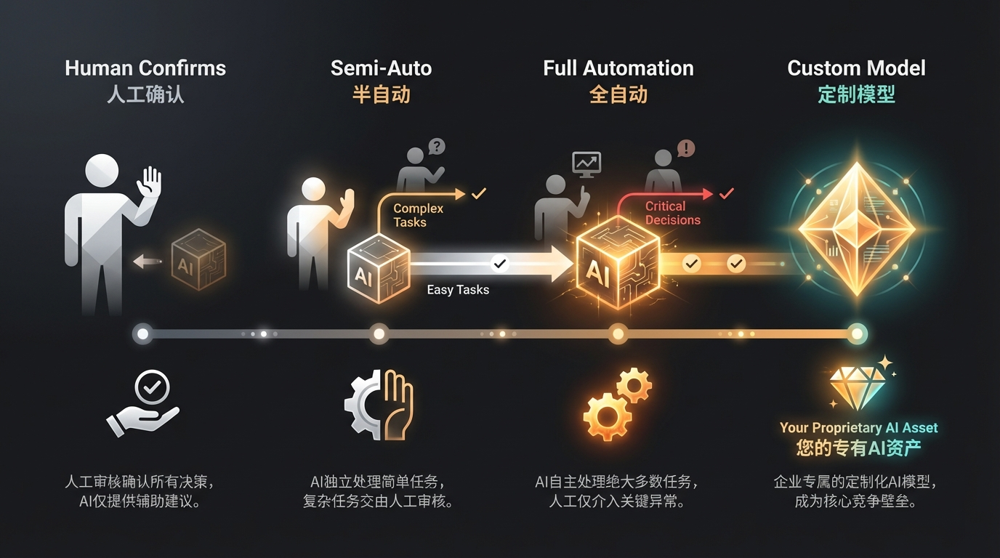

SudoClaw 独创的双引擎模式，彻底改变人与 AI 的协作方式
管理者唯一需要交互的界面。理解您的战略意图和业务上下文，将模糊的指令转化为精准的执行任务。
多个专业 Worker 各司其职、自动协同，代码编写、数据处理、文档生成、ERP 对接，完成从任务拆解到结果交付的完整闭环。

售前顾问对 Copilot 说"帮我准备下周给客户的方案"。 Copilot 将意图拆解为四个任务：行业数据采集、客户痛点提炼、方案架构设计、ROI 测算。四个 Worker 并行执行，当天交付一个带导航、带数据、带架构图的完整定制演示网页——不是 PPT，是一个可交互的网站。
不是更好的对话框——是一支真正帮企业闭环的 AI 劳动力。
不是对话框，是一支 AI 团队帮你从头干到尾。下一个意图，Copilot 拆解任务，Worker 并行执行，结果直接交付。
直接嵌入 ERP、数据库、审批流，实现高价值业务场景的端到端自动化，而非停留在"你问我答"。
对接私有数据库、知识库和行业专家沉淀的 Skill 包，AI 懂你的业务、用你的数据、按你的规范执行。
内置 SudoRouter，20+ 模型按任务复杂度动态调度。模型降价一键切换，永不锁定供应商。
全私有化部署，数据不出域。AI 沙箱物理隔离、PII 自动脱敏、细粒度访问控制，从第一行代码为企业安全而建。
安全多方计算 + 联邦学习，跨机构数据协作"可用不可见"。不是第三方集成，是平台原生能力。
SudoClaw 不是单点工具，而是由三大核心组件构成的完整 AI 工作平台

用户与 AI 职场搭子交互的入口

承载所有 AI 员工的底层操作系统

按任务复杂度动态选择最优模型
30+ 个真实业务场景，覆盖 10 大行业，找到与你最相关的场景
把客户需求输入 SudoClaw，Worker 自动完成行业数据采集、痛点提炼、方案设计、ROI 测算，直接生成可交互的定制化演示网页。从"改三轮 PPT"变成"出网站等反馈"。
Worker 自动调取工商信息、资质证书、业绩、中标历史，同步扫描司法风险和税务异常，几分钟内生成结构化对比报告。
按省份、资质要求、项目类型自动筛选招标信息，符合条件的项目实时推送到企微群，再也不漏标。
Worker 自动追踪 CRM 商机状态——超期未联系自动提醒，临近续约推送背景摘要，丢单客户定期触发复盘分析。


首批上线
每个 Agent 4–6 周
首批上线
平台搭建约 1 周，之后每个 Agent ≈1 周
后续扩展
每个从零开始
后续扩展
只需写 Skill + Agent 编排
系统对接
每个项目重复对接
系统对接
Extension 装一次，所有 Agent 共享
运行成本
全用高端模型，成本线性增长
运行成本
SudoRouter 智能路由，大幅降低模型成本
通用大模型是"实习生"——什么都能聊但不懂你的业务。SudoClaw 把规则、流程、知识封装进去，变成"老员工"。

人工确认期
AI 只做提示和建议，所有动作人工确认，每周复盘准确率
半自动期
低风险动作自动执行，高风险仍保留人工确认
全面自动化
仅决策红线保留人工介入，AI 全权负责日常执行
企业专属模型
持续积累标注数据触发微调，产出别人买不到也抄不走的核心资产
在整个过程中，您的数据始终在自己的服务器上，AI 的每一步操作都在受控沙箱中完成，跨机构协作通过隐私计算实现"可用不可见"。掌控权从第一天到最后一天，都在您手里。
数牍科技——从隐私计算到企业 AI 劳动力平台
数牍科技（SudoPrivacy）是国内最早一批将隐私计算技术落地商用的企业，国家级专精特新"小巨人"。核心团队来自 Google DeepMind、Meta、Microsoft、Amazon、清华大学、UCLA、剑桥大学等机构，在数据安全、AI 基础设施和企业级系统架构领域深耕多年。
我们的团队通常在一周内完成从需求对接到 POC 环境搭建。
私有化部署，数据不出域，合规无忧。
或发送邮件至 business@sudoprivacy.com